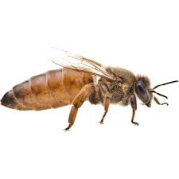
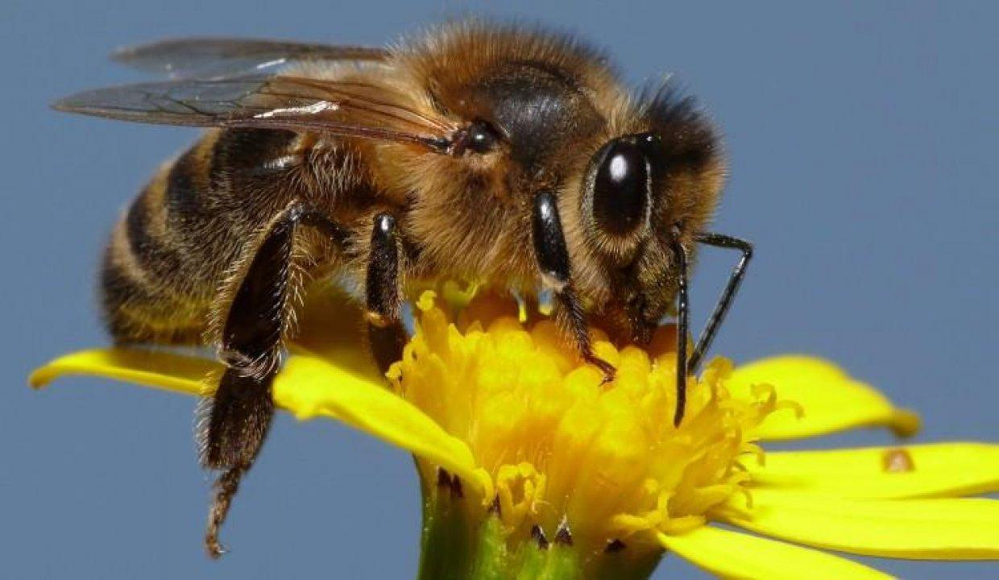

ANA ARI HAKKINDA BİLGİLER
Arı kovanında bulunan arı kolonisinin en önemli arısı, yumurta atma özelliği olan, arıların çoğalmasını sağlayan ve arı kovanının geleceğini sağlayan bireye ana arı denir. Ana arı her kovan bir adet bulunur. Bazı durumlarda iki tane olabilmektedir ama mutlaka birbirini öldürür diğeri hükümdarlığını ilan eder. Asla bir arı kovanında iki tane ana arı olamaz.
SİYAH ARI TÜRÜ HAKKINDA BİLGİLER
Siyah arı ırkına aynı zamanda esmer arı ırkı da denilmektedir. Genel itibari ile dünyanın bir çok noktasında bulunmaktadır ama daha çok Avrupa ülkelerinde görülmektedir. Diğer arı ırkları ile melezleme yöntemi yapılarak daha fazla verim elde edilmiştir. Görüntü itibari ile iri yapılı arılar kategorisinden yer almaktadır. Karın altı halkalarında sarı noktalar mevcuttur vücutları uzun ve seyrek kıllarla kaplıdır. Erkek arılardaki kıllar koyu kahverengi olup, nadirde olsa siyah kılda görülebilir.
SARI ARI TÜRÜ HAKKINDA BİLGİLER
Sarı arı ırkının ana vatanı olarak bilinen yer İtalya ülkesinin Sicilya adası olarak geçmektedir. Görüntüsü ve arı peteği üzerindeki görünüşü itibari ile sakin arı çeşitleri arasından bulunmaktadır. Sarı arı türü hızlı çoğalma özelliğine sahiptir. Bu arı türü sert kış olan bölgelerde yaşama durumu yoktur. Genel itibari ile yağmacılık özelliği yaygın olup, oğul verimi düşüktür.

KAFKAS ARI TÜRÜ HAKKINDA BİLGİLER
Kafkas arısının ülkemizde üretim sahası Ardahan ili Posof ilçesidir. Kafkas bal arılarının ana vatanı Kafkasya bölgesidir. Kafkas arısı yaşadığı yere göre iki türe ayrılır. Bunlardan birincisi dağlarda yaşayan Kafkas arısı gri renklidir. Kafkas arısının ikinci tipide alçak veya ovalık yerde yaşayan tipidir. Bu tip olan arılar sarı renklidir. Kafkas bal arılarının en fazla tercih edileni dağ kesiminde yaşayan tipidir. Kafkas arısı aynen carniola bal arısına benzemektedir. Kitin rengi koyu kıl örtüsü açık gridir. Erkeklerde göğüs kılları siyahtır.
KIBRIS BAL ARISI HAKKINDA BİLGİLER
Kıbrıs bal arısı küçük yapılı koyu sarı renklidir. Çok hırçın ve saldırgan bir yapıya sahiptir. Kıbrıs bal arısının bu özelliğinden dolayı kontrolü ve idaresi oldukça zordur. Melezleme sonuçlarından iyi sonuçlar alınamadığından fazla tercih edilen bir arı türü değildir. Ülkemizde Akdeniz Bölgesinde azda olsa bulunmaktadır.